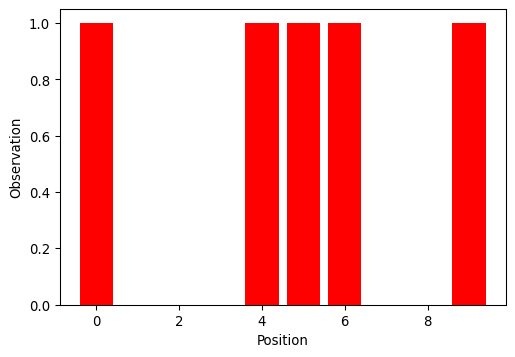
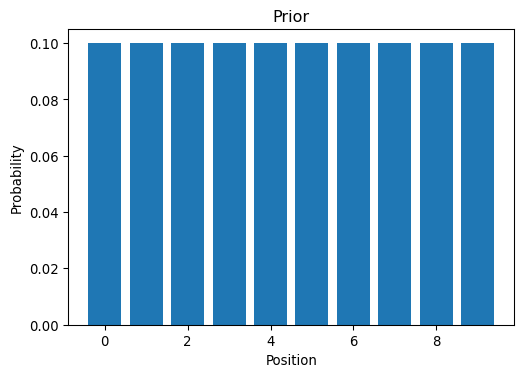
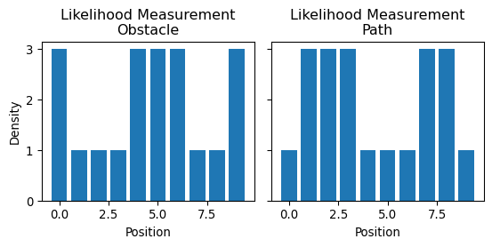
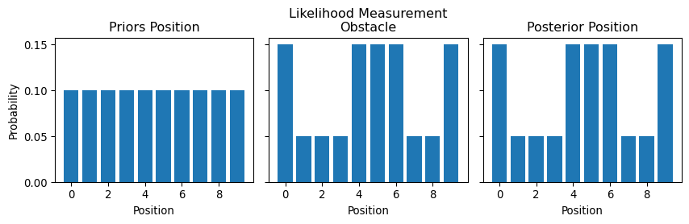

Show supplementary code
from jax import jit
import numpy as np
import matplotlib.pyplot as pltValerio Bonometti
August 24, 2023
In order to move from the gh filter presented in the previous post to the Kalman filter we need to introduce some concepts borrowed from Bayesian statistics. A comprehensive introduction to the topic is beyond the aim of this post, for which we suggest the fantastic book by Richard McElreath Statistical Rethinking.
As we have seen before the gh filter relied consistently on the idea of generating predictions given our knowledge of the state of a system and adjusting these as soon as we had observable measurements. It turns out that bayesian statistics offers a convenient and formal framework for doing this type of belief updates. Let’s look at a concrete example
Let’s say that we are trying to estimate the position of an agent within an environment with a certain number of obstacles.
from jax import random
import jax.numpy as jnp
master_key = random.PRNGKey(666)
observations = random.choice(key=master_key, a=jnp.array([0., 1.]), shape=(10,), p=jnp.array([.4, .6]))
fig, ax = plt.subplots(1, 1, figsize=(6, 4))
ax.bar(
x=np.arange(len(observations)),
height=observations,
color="r"
)
ax.set_ylabel("Observation")
ax.set_xlabel("Position")
plt.show()
Without receiving any measurement from the agent our belief, we will call it prior from now on, on its position is distributed equally on all the available locations
priors = jnp.array([1. / len(observations)] * len(observations))
fig, ax = plt.subplots(1, 1, figsize=(6, 4))
ax.bar(
x=np.arange(len(observations)),
height=priors
)
ax.set_title("Prior")
ax.set_ylabel("Probability")
ax.set_xlabel("Position")
plt.show()
The measurements we receive from the agent will tell us if, in its current state, it is facing an obstacle or not. We can quantify our knowledge in light of a measurement though a likelihood function
@jit
def custom_likelihood(measurement, observations, p):
"""Compute the likelihood of the agent being in
each potion of the observations space given a measurement
and the probability of an obstacle
Args:
- measurement(int): measurement from the agent.
- observations(DeviceArray): possible locations of the agent.
- p (float): probability that the measurement is providing correct information
Returns:
- likelihood(DeviceArray): likelihood of the agent
position in the observation space.
"""
likelihood = jnp.ones(shape=(len(observations), ))
likelihood = jnp.where(
observations == measurement,
likelihood * (p / (1-p)),
likelihood
)
return likelihood
likelihood_obstacle = custom_likelihood(
measurement=1,
observations=observations,
p=.75
)
likelihood_path = custom_likelihood(
measurement=0,
observations=observations,
p=.75
)
fig, axs = plt.subplots(1, 2, figsize=(6, 3), sharex=True, sharey=True)
axs[0].bar(
x=np.arange(len(observations)),
height=likelihood_obstacle
)
axs[0].set_title("Likelihood Measurement\nObstacle")
axs[1].bar(
x=np.arange(len(observations)),
height=likelihood_path
)
axs[1].set_title("Likelihood Measurement\nPath")
axs[0].set_ylabel("Density")
axs[0].set_xlabel("Position")
axs[1].set_xlabel("Position")
plt.tight_layout()
plt.show()
and subsequently update our priors in view of the likelihood derived from the measurements using bayes theorem \(posterior \propto likelihood \times prior\)
def plot_posterior_derivation(priors, likelihood, posterior):
fig, axs = plt.subplots(1, 3, figsize=(9, 3), sharex=True, sharey=True)
axs[0].bar(
x=np.arange(len(priors)),
height=priors
)
axs[0].set_title("Priors Position")
axs[1].bar(
x=np.arange(len(likelihood)),
height=likelihood / likelihood.sum()
)
axs[1].set_title("Likelihood Measurement\nObstacle")
axs[2].bar(
x=np.arange(len(posterior)),
height=posterior
)
axs[2].set_title("Posterior Position")
axs[0].set_ylabel("Probability")
for ax in axs:
ax.set_xlabel("Position")
plt.tight_layout()
plt.show()Since our priors were not providing any information the posterior we obtained was driven exclusively byt the likelihood
@jit
def custom_update(priors, likelihood):
"""Update priors about agent position given likelihood of the measurement
Args:
- priors(DeviceArray): priors on the agent position.
- likelihood(DeviceArray): likelihood of the agent position after observing a measurement.
Returns:
- posterior(DeviceArray): posterior probability of the agent
position in the observation space.
"""
posterior = priors * likelihood
return posterior / jnp.sum(posterior)
likelihood = custom_likelihood(
measurement=1,
observations=observations,
p=.75
)
posterior = custom_update(
priors=priors,
likelihood=likelihood
)
plot_posterior_derivation(
priors=priors,
likelihood=likelihood,
posterior=posterior
)
However it is easy enough to see how things change if we provide priors that are slightly more informative
We have outlined a formal way in which bayes theorem can help us updating our beliefs on the position of the agent. However we have seen how to do this given a single measurement gathered at one point in time. In order to extend this to a time series, as we did with the gh filter, we need to incorporate a model of the dynamics of the agent for being able to make predictions.